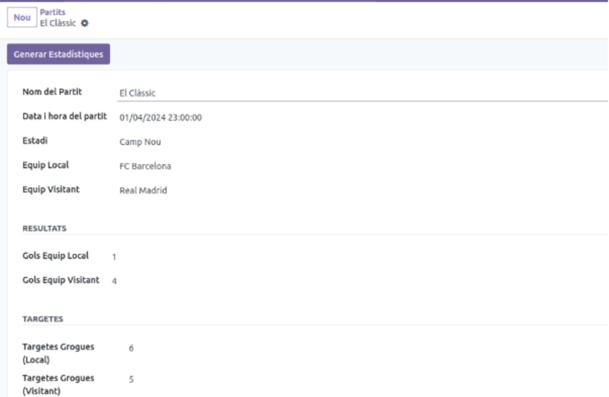

Simulació de partits de futbol
Modul d'Odoo per a facilitar la simulació d'estadistiques en un partit de futbol
OdooPython
Becari IT a BASF i estudiant de DAM. Especialitzat en PowerApps, ServiceNow i suport tècnic.
Estudiant del Cicle Formatiu de Grau Superior en Desenvolupament d'Aplicacions Multiplataforma (DAM) i Becari IT a BASF Española.
Col·laboro en el desenvolupament d'aplicacions internes i en l'atenció a usuaris, configurant dispositius i resolent incidències. Em caracteritzo per la meva adaptació, ganes d'aprendre i motivació per créixer professionalment dins del món IT.
Els meus treballs personals i acadèmics.
Modul d'Odoo per a facilitar la simulació d'estadistiques en un partit de futbol

Optimització de processos interns mitjançant l'ús de la Power Platform.
Coneix-me en menys d'un minut.
La implementació d'eines Low-Code com PowerApps està transformant la manera com les multinacionals gestionen el desenvolupament de programari intern. Aquesta tecnologia permet reduir dràsticament els temps de lliurament, facilitant la creació de solucions personalitzades sense necessitat de grans equips de programació.
Llegir més →En un entorn de suport tècnic d'alt volum, la priorització és fonamental per mantenir la productivitat. Utilitzant eines com ServiceNow, és vital classificar incidències crítiques mentre es manté el focus en projectes de desenvolupament a llarg termini.
Llegir més →